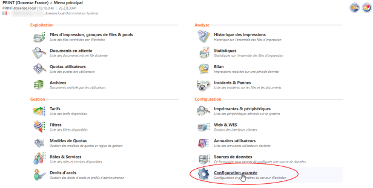
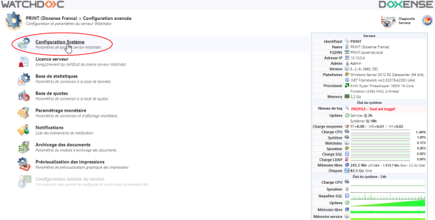
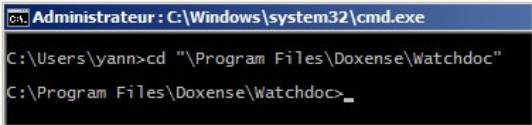
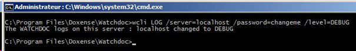
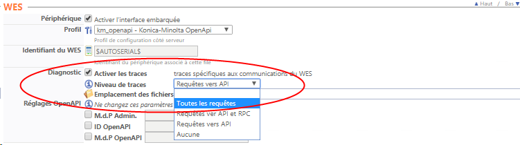
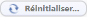
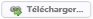
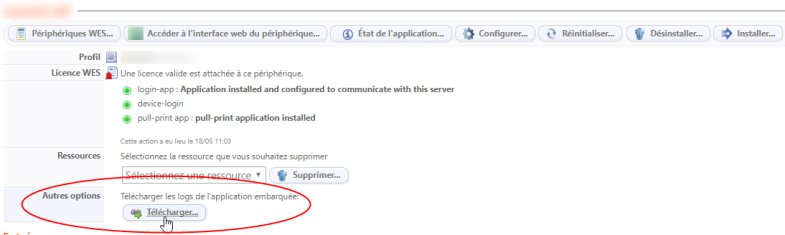

Activer les journaux DSP (logs) - Procédure
Accéder à l'interface de configuration
-
Accédez à l'interface d'administration de Watchdoc en tant qu'administrateur ;
-
Menu principal> section Configuration, cliquez sur Configuration avancée ;

-
dans l'interface [Nom_ du_ serveur] > Configuration avancée, cliquez sur Configuration Système :

→ Vous accédez à l'interface Configuration Système.
Une partie des informations qui y figurent ont été saisies lors de l'installation initiale de Watchdoc.
Activer les journaux DSP
Dans l'interface Configuration système,
-
dans la section DSP
 Les fichiers SHD appartiennent principalement à Print Spooler de Microsoft. Un fichier SHD est un travail d'impression fantôme contenant des informations d'en-tête sur un travail d'impression lancé par le service Print Spooler sur Windows système d'exploitation. Les informations enregistrées dans un fichier SHD incluent une copie des paramètres de travail d'impression enregistrés dans le document spoule réel (fichier SPL).
(source : https://filext.com/), sous-section Journaux, précisez les paramètres suivants :
Les fichiers SHD appartiennent principalement à Print Spooler de Microsoft. Un fichier SHD est un travail d'impression fantôme contenant des informations d'en-tête sur un travail d'impression lancé par le service Print Spooler sur Windows système d'exploitation. Les informations enregistrées dans un fichier SHD incluent une copie des paramètres de travail d'impression enregistrés dans le document spoule réel (fichier SPL).
(source : https://filext.com/), sous-section Journaux, précisez les paramètres suivants :-
Historiser les requêtes entrantes... : cochez la case pour enregistrer les requêtes des périphériques vers le serveur web interne à Watchdoc ;
-
Enregistrer toute l'activité réseau : cochez la case pour enregistrer l'intégralité des échanges entre le périphérique et le service Watchdoc ;
-
Chemin : indique le dossier dans lequel les journaux sont enregistrés par défaut (C:\Program Files\Doxense\Watchdoc\logs). Indiquez le chemin vers un autre dossier si nécessaire.

-
-
Cliquez sur pour valider les paramètres de la Configuration Système.
Augmenter le niveau de traces de Watchdoc
Si le niveau des traces nécessaires à l'analyse du dysfonctionnement n'est pas suffisant, vous pouvez le modifier selon 2 méthodes différentes :
-
Soit à l'aide d'une commande en ligne ;
-
Ouvrez une ligne de commande ;
-
placez-vous dans le répertoire d'installation de Watchdoc :

-
exécutez la commande suivante : wcli LOG /server=localhost /password=changeme /level=DEBUG
Dans cette commande :
le paramètre server désigne le serveur sur lequel le service Watchdoc.exe est en cours d'exécution ;
Le paramètre password désigne le mot de passe de maintenance du serveur Watchdoc ciblé ;
Le paramètre level désigne le niveau de trace que l'on souhaite appliquer (DEBUG ou INFO).
→ Le message suivant s'affiche : [serveurWatchdoc] changed to [Niveau de trace].

→ Le niveau de trace appliqué après commande est effectif jusqu'au redémarrage suivant du service Watchdoc ou jusqu'à l'exécution de la même commande paraétrée avec le level INFO.
-
Soit à l'aide du fichier de configuration
-
Ouvrez le fichier Watchdoc.exe.config (enregistré par défaut dans le dossier C:\ProgramFiles\Doxense\Watchdoc) à l'aide d'un éditeur de texte simple (type MS Windows Notepad®) et remplacez la ligne suivante:
<add key="traceLevel" value="2" />Par :
<add key="traceLevel" value="0" /> -
-
sauvegarder le fichier, puis redémarrer le service Watchdoc ;
Activer les traces du WES
Lorsque les périphériques sont équipés de WES, il peut être nécessaire d'activer l'enregistrement des communications entre le périphérique et leserveur Watchdoc pour diagnostiquer une anomalie.
Dans ce cas, l'activation des journaux doit être effectué au niveau du WES. Dès lors, toutes les files équipées de ce WES sont tracées.
Si les traces ne concernent qu'une ou plusieurs files spécifiques, outre l'activation sur Je le WES, il convient d'activer les traces sur la ou les files concernées.
Pour activer les traces d'un WES sur une file :
-
depuis le Menu Principal de Watchdoc, section Exploitation > cliquez sur Files d'impression ;
-
dans la liste Files d'impression, cliquez sur le nom de la file concernée ;
-
dans l'interface d'administration de la file, cliquez sur Editer les propriétés.
-
dans l'interface Propriétés de la file d'impression, rendez-vous dans la section WES ;
-
cochez Activer les traces et précisez Toutes les requêtes.

→ Par défaut, les logs sont enregistrés dans le dossier \Logs de Watchdoc.
Pour activer ces journaux :
-
depuis le Menu Principal de Watchdoc > section Configuration, cliquez sur Web & Wes ;
-
dans la liste Profils WES, sélectionnez le WES concerné ;
-
dans la section Divers > sous-section Options des logs, sélectionnez :
-
Emplacement : désignez l'emplacement dans lequel les fichiers de traces doivent être enregistrés :
-
fichier : cochez cette case pour que les informations soient enregistrées dans un fichier accessible par Watchdoc ;
-
périphérique :cochez cette case pour que les informations soient enregistrées sur le périphérique ;
-
tous : cochez cette case pour que les informations soient enregistrées dans un fichier accessible par Watchdoc et sur le périphérique.
-
-
Niveau : indiquez le niveau d'information souhaité dans le fichier de traces. Les informations sont plus ou moins étoffées en fonction de leur niveau : nous vous recommandons d'opter pour le niveau Info, intermédiaire. Après analyse des informations fournies dans le fichier de traces, vous pourrez réajuster le niveau d'information souhaité si nécessaire.

-
Depuis le Menu Principal Watchdoc > section Exploitation, cliquez sur Files d'impression ;
-
dans la liste ; sélectionnez la file concernée ;
-
dans l'interface de gestion de la file, cliquez sur l'onglet Propriétés ;
-
dans la section WES, cliquez sur le bouton

.
Récupérer les journaux
Dans Watchdoc, reproduisez l'anomalie ;
-
depuis le Menu principal de Watchdoc > section Exploitation, sélectionnez la file concernée ;
-
dans l'interface de gestion de la file, cliquez sur l'onglet Propriétés ;
-
dans la section WES > Sous-section Autres options, cliquez sur le bouton

;
→ Watchdoc génère une archive compressée de journaux que vous pouvez enregistrer dans votre espace de travail.